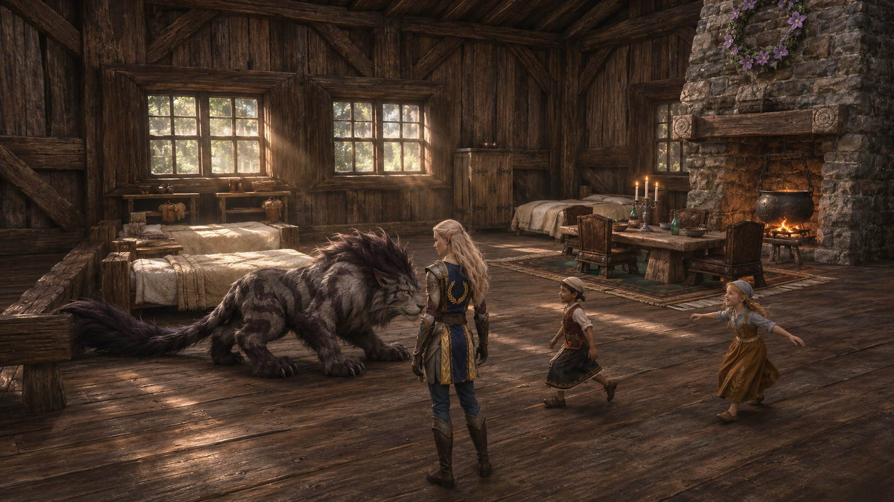

I carried a dispatch into Farholde Keep this morning and came away with errands for the living and candles for the dead.
From above, I think I would have noticed the river first. It bends back on itself so often that three lakes lie beside its course. From the road, I noticed how much of the country is still worked. There are horses to bring in, fields to tend, and people who remember which families used to live in the next village.
Stormwind yielded the Riverglades during the First War. When the Horde cut the road home, the knights who had gotten people out of Sunnyglade stayed with them. Some of the survivors founded Meadowsbrook. Others helped fortify the coastal island that became Farholde Keep. The Brotherhood of the Horse has spent twenty years trying to win the country back. I could see what there was to fight for before I ever spoke to Commander Brant. The farms are close enough to the keep that a rider could bring word of trouble. They are far enough away that someone still has to ride.
Sister Rowland had bats in her belfry and graves that needed tending. I dealt with the bats, brought her holy candles, and set three memorial lights among the graves. The chapel no longer holds services, but she still keeps watch over the people buried there. At Wheeler’s Grange, Benjy had foals to see to and coyotes ranging near the farm. I helped with both, saw to a neighbor’s errand, and brought Ember Bladewhisper what she needed for her work. It felt like a full day already when I turned north for Arathi.
The giant in Arathi
Fozruk wanders the Highlands, and there is a good deal of country to wander in. I called for help, and Timmay Birch and Poje Hammerstar of Mid Life Aggro answered. While we waited, Timmay petted Sylthara. She purred for him. She has good taste in company.
Then Poje called out that he had found the giant, and I ran. I’d spent the morning working through the binding stones, and I was glad to have experienced hands beside me when it came time to take the Rod of Order. Fozruk fell, I took the rod, and Timmay explained where the trail led next. More elementals, this time in the Badlands, and eventually the road would bring me back to Arathi.
“Just holler when you need help and I’ll come runnin,” he said.
I ought to have remembered that a little sooner.
Graves and bookcases
By afternoon I was under the Scarlet Monastery with Varreah Echoveil, Vikky Luv, Twinkle Lightspark, and Syndra Dusksworn. In the Graveyard, Syndra called for us to break line of sight. Stone corners are good cover if you remember to use them. I kept enough room to draw my bow and sent Sylthara in when I had a clear shot. Vishas laid his shadow spell on us and went down. Farther in, Bloodmage Thalnos threw fire and shadow from among the graves. Sylthara stayed close to him while I kept my distance and shot. We went back through the Graveyard once more. I caught up late on that pass and was there when Thalnos fell again.
Sincerus Argentia joined us for the Library. I’d gone back hoping for a crossbow, but first we had to get past Houndmaster Loksey and his dogs. He drove them into a frenzy, and for a moment there were teeth everywhere I looked. I picked my shots around Sylthara and kept shooting until Loksey fell.
Doan was the harder fight. One moment there was a clear shot at him, and the next he was behind an arcane shield, with a blast building in the room. He silenced us twice before he went down. Varreah came away with the Hypnotic Blade and Twinkle with Doan’s mantle. I left with the bow I’d carried in. On the way out I warned the others to watch for returning patrols. We’d spent long enough in those rooms for the way behind us to get dangerous again.
Agmond’s End
I came back to the Riverglades long enough to round up Wheeler’s runaway horses. The harvest sentries were still stalking the fields afterward. I reached my thirty-eighth level there, which may explain why I felt so sure of myself when I went looking for Theldurin in the Badlands.
He sent me up the path at Agmond’s End after stolen scroll fragments. The rock elemental there went into a rage. Sylthara fell, and I died on that same red slope. I had gone up the path with my best friend and all the confidence I’d brought away from Fozruk. What I’d left behind was the company that helped us bring him down.
Sylthara and I made it back to the Riverglades together. By the water we finished Benjy’s Mudfin hunt, working through warriors and oracles along the banks near Meadowsbrook. Then I put away the bow and took us to the Elk’s Horn Inn.
There were two children up among the beds, a pot over the hearth, and a wreath of purple flowers on the stone above it. Sylthara came so close that I could have rested my hand on her head without moving my feet. I stood there a while and let the children go around us.
The fragments can wait until tomorrow.